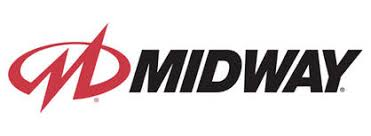

História das desenvolvedoras de Mortal Kombat
Midway Games

- Fundação (1958) - A Midway Games começou como Midway Manufacturing, inicialmente focada em jogos arcade mecânicos e pinball.
- Entrada nos Arcades (1970-1980) - A empresa começou a produzir jogos eletrônicos, licenciando sucessos como Pac-Man e Space Invaders para distribuição nos Estados Unidos.
- Criação de Mortal Kombat (1992) - Ed Boon e John Tobias lideraram a equipe que criou o primeiro Mortal Kombat, um jogo que revolucionou a indústria com gráficos digitalizados e violência explícita.
- Expansão e Sucesso (1990-2000) - A franquia Mortal Kombat se tornou um fenômeno, gerando sequências, filmes, séries e brinquedos.
- Crise Financeira (2000-2009) - A Midway começou a enfrentar dificuldades financeiras devido a decisões de negócios equivocadas e concorrência acirrada.
- Falência (2009) - Incapaz de se recuperar, a empresa declarou falência e seus ativos foram vendidos.
NetherRealm Studios

- Fundação (2010) - Após a falência da Midway, a Warner Bros. adquiriu os direitos de Mortal Kombat e fundou o NetherRealm Studios, com Ed Boon à frente do projeto.
- Renascimento da Franquia (2011) - Lançamento de Mortal Kombat (2011), que reiniciou a história da saga com gráficos modernos e gameplay refinado.
- Expansão para Injustice (2013) - O estúdio lançou Injustice: Gods Among Us, um jogo de luta com personagens da DC Comics.
- Mortal Kombat X (2015) - Uma nova geração de personagens foi introduzida, expandindo a narrativa e a jogabilidade.
- Mortal Kombat 11 (2019) - O jogo trouxe gráficos ultrarrealistas e um dos modos de história mais elogiados da franquia.
- Inovação Contínua (2023) - Mortal Kombat 1 foi lançado, reimaginando a série com um novo enredo e mecânicas inovadoras.